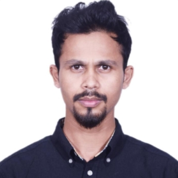

Bridging traditional mechanical design (CAD, FEA) with advanced Industry 4.0 solutions (Deep Reinforcement Learning, Graph Neural Networks) to solve complex manufacturing and systems engineering problems.
I am an engineering researcher with over 5 years of R&D experience at Walton Hi-Tech Industries PLC, where I led the design and launch of complex consumer products, including a 250+ part flagship refrigerator.
I hold an M.Engg. in Advanced Engineering Management from BUET (GPA 3.45/4.00) and a B.Sc. in Industrial & Production Engineering from KUET (CGPA 3.59/4.00, Ranked 11th/54).
My research focuses on applying Deep Reinforcement Learning (DRL), Graph Neural Networks (GNNs), and Discrete-Event Simulation to optimize facility layouts, production systems, and autonomous decision-making under strict spatial constraints.
Master's Thesis: Developed a hybrid AI pipeline (Genetic Algorithm + Rainbow DQN + GNN) in PyTorch to optimize industrial facility layouts under strict spatial constraints, reducing material handling costs by 25%.
Developed 3D virtual plant models (SketchUp, V-Ray) integrating machinery collision constraints, hazard buffer zones, and human-machine interaction clearances for smart manufacturing.
Designed a functional artificial limb in Fusion 360, focusing on mechanical joint articulation, material selection, and user comfort, bridging biomechanics and human-centered design.
Engineered a three-component snap-fit assembly in SolidWorks; utilized Autodesk Moldflow to analyze material flow and optimize tooling design for injection molding.